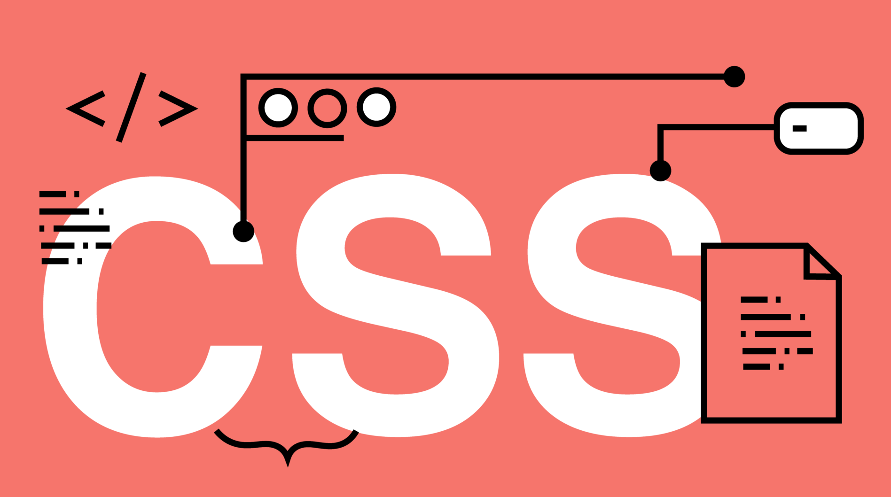

Página informativa CSS
¿Qué es CSS?
CSS es un lenguaje de diseño web que permite dotar de estilo gráfico a las páginas escritas en HTML. Sus siglas significan Cascading Style Sheets, que en español se traduciría como “hojas de estilo en cascada”. Actualmente, su uso en desarrollo web es generalizado, pues el 97 % de las webs emplean este lenguaje.

CSS permite declarar de forma sencilla cómo se verán los diferentes elementos de una web, dotándolos de posición, forma, color, fuente, etc. Es posible controlar y personalizar todos los elementos a partir del uso de un lenguaje específico.
Las declaraciones pueden realizarse en varias hojas de estilo, las cuales pueden heredar las propiedades de los elementos que elijamos. Esto permite reutilizar las propiedades de un elemento sin necesidad de reescribir código.
Historia de CSS
CSS fue inventado en el año 1996 por la organización W3C (World Wide Web Consortium), institución mundial encargada de normalizar el uso y desarrollo de la tecnología que da forma a Internet. A pesar de su antigüedad, CSS sigue siendo fundamental para el desarrollo web, sin apenas alternativas funcionales.
En la versión 3.2 de HTML se introdujeron algunas etiquetas para seleccionar el tipo de fuente a utilizar, pero enseguida surgieron problemas entre los desarrolladores. Fue entonces cuando W3C decidió crear CSS, con el objetivo de ofrecer una solución sencilla para diseñar webs funcionales y compatibles con la mayoría de navegadores web.
En la actualidad, la mayoría de webs utilizan CSS3, la tercera revisión del lenguaje lanzada en 2011. Una de sus principales novedades fue la capacidad de hacer que una web se adaptara fácilmente a distintos formatos de pantalla. Este cambio fue necesario ante el crecimiento del uso de dispositivos móviles.
Ventajas y desventajas de usar CSS
Ventajas
- Separación de la estructura y la presentación. CSS permite separar el contenido HTML de su presentación visual. Es decir, te permite mantener el código HTML limpio y estructurado, mientras que el estilo se define en un archivo CSS separado. Este orden mejora la legibilidad del código y facilita el mantenimiento, así como la actualización de los estilos.
- Consistencia y mantenibilidad. Al utilizar CSS, puedes aplicar estilos de manera consistente a un sitio o aplicación web. Los estilos se definen una vez y se aplican a múltiples elementos en las páginas, lo que favorece la renovación de la apariencia visual de todo el proyecto.
- Eficiencia en el rendimiento. CSS permite cargar estilos externos en un archivo separado. Con esto, el navegador almacenará en caché los estilos y los aplicará a todas las páginas del sitio, lo que mejora el rendimiento al reducir la cantidad de datos que deben transferirse entre el servidor y el cliente.
- Eficiencia en el rendimiento. CSS permite cargar estilos externos en un archivo separado. Con esto, el navegador almacenará en caché los estilos y los aplicará a todas las páginas del sitio, lo que mejora el rendimiento al reducir la cantidad de datos que deben transferirse entre el servidor y el cliente.
Desventajas
- Curva de aprendizaje. CSS puede tener una curva de aprendizaje empinada, en particular, para los principiantes. Entender, por completo, todas las propiedades, selectores y conceptos avanzados puede llevar tiempo y práctica.
- Compatibilidad entre navegadores. Aunque los estándares de CSS son de los más aceptados, algunos navegadores podrían interpretar y renderizar los estilos de manera diferente. Esto puede resultar en inconsistencias visuales y requerir pruebas o ajustes adicionales para garantizar la compatibilidad entre plataformas.
- Especificidad y herencia. CSS utiliza reglas de especificidad y herencia para determinar qué estilos se aplican a los elementos. En ocasiones, el orden de las reglas y la jerarquía pueden generar resultados inesperados. Esto requiere una comprensión cuidadosa de cómo funcionan estas reglas para evitar conflictos y problemas de estilo.
- Limitaciones en la maquetación. Aunque CSS ofrece una amplia gama de propiedades para el diseño y la maquetación, puede presentar limitaciones en ciertos casos más complejos. Algunos diseños específicos pueden requerir soluciones adicionales o el uso de técnicas más avanzadas para lograr el resultado deseado.
¿Cómo aplicar estilos CSS a tu página web?
Aplicar CSS a tu página web es un proceso sencillo, pero a la vez determinante para personalizar su apariencia.
- Lo primero que puedes hacer es utilizar una hoja de estilos externa, lo que es muy recomendable para mantener el código organizado y facilitar el mantenimiento de la página. Para ello, debes vincular el archivo CSS en el < head > de tu HTML con la etiqueta < link >.
- Otra opción es usar estilos internos mediante la etiqueta < style >, también dentro del < head >, útil para estilos específicos de una sola página.
- Por último, los estilos en línea se aplican directamente sobre elementos individuales a través del atributo style de CSS, ofreciendo una forma rápida y eficaz de modificar el estilo de elementos específicos sin afectar a otros.